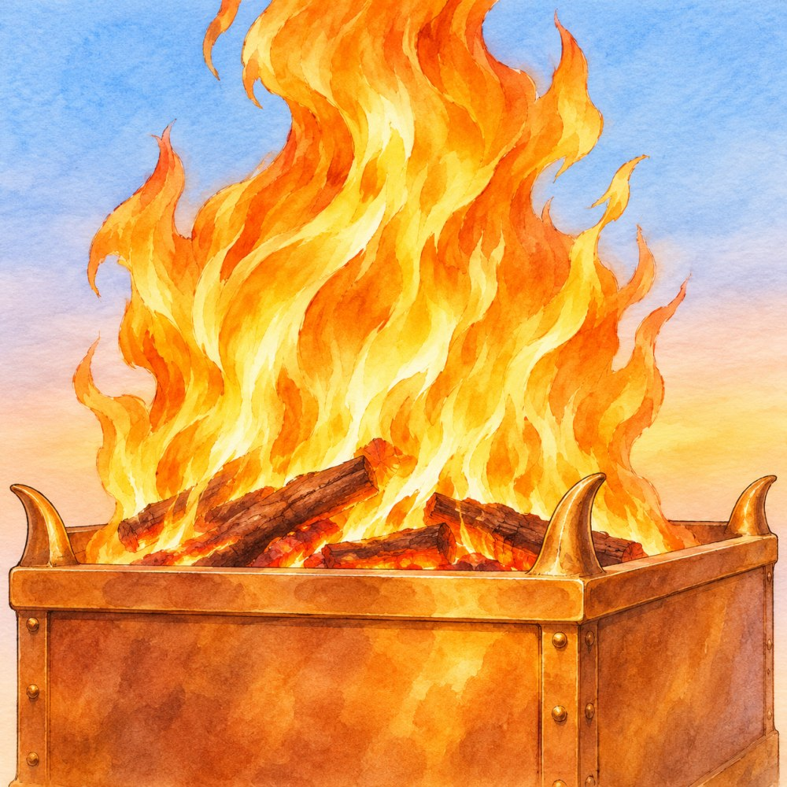
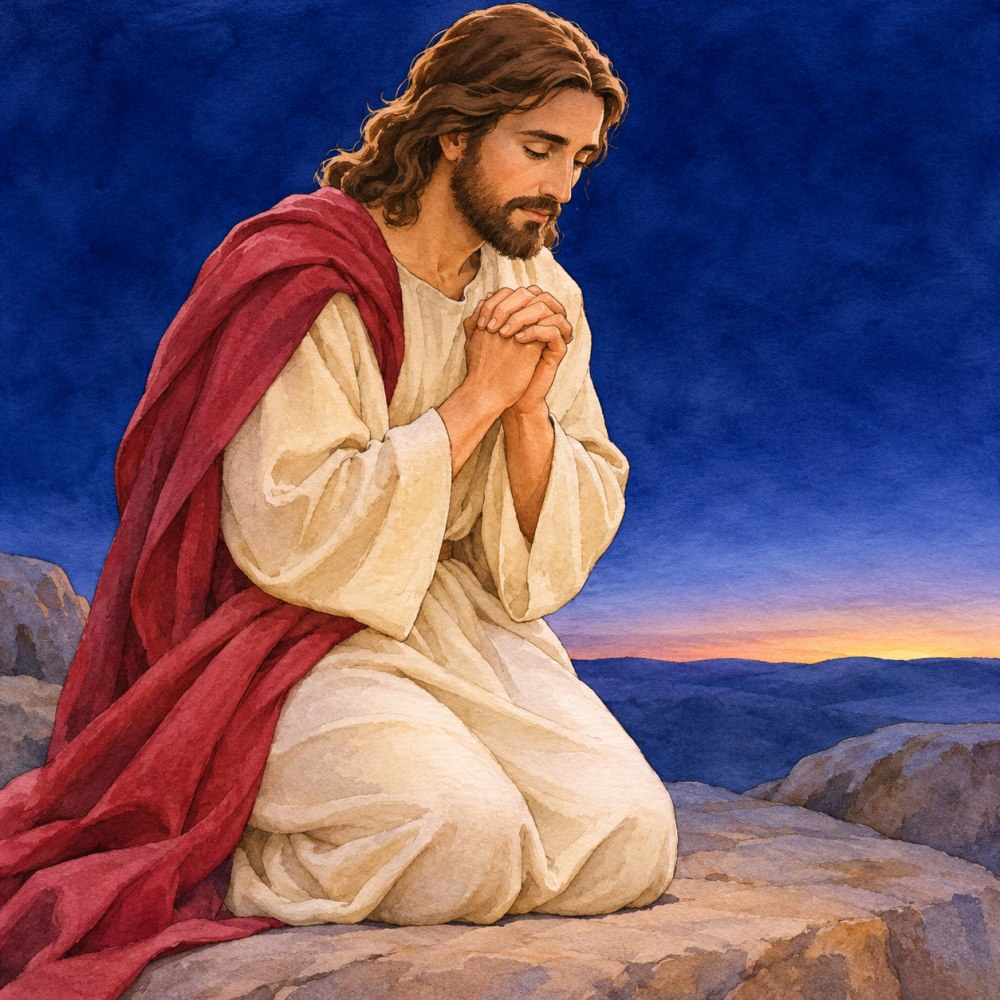
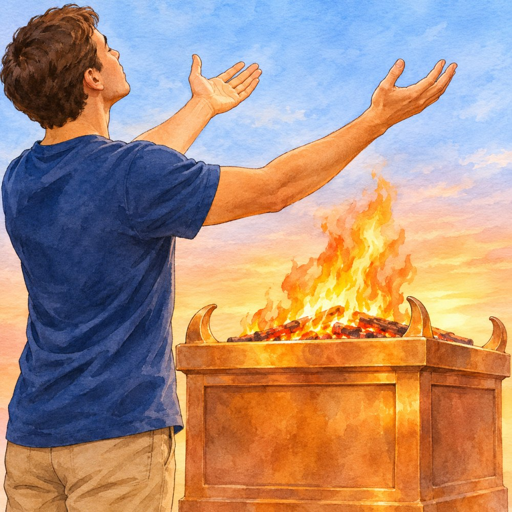
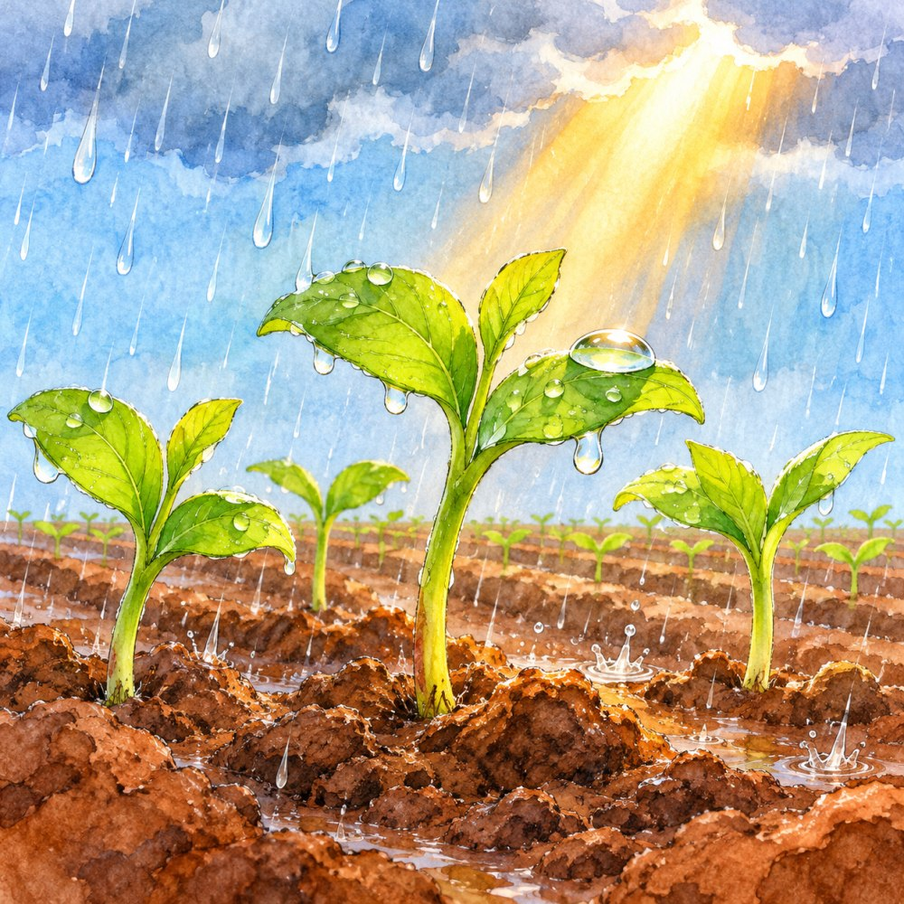
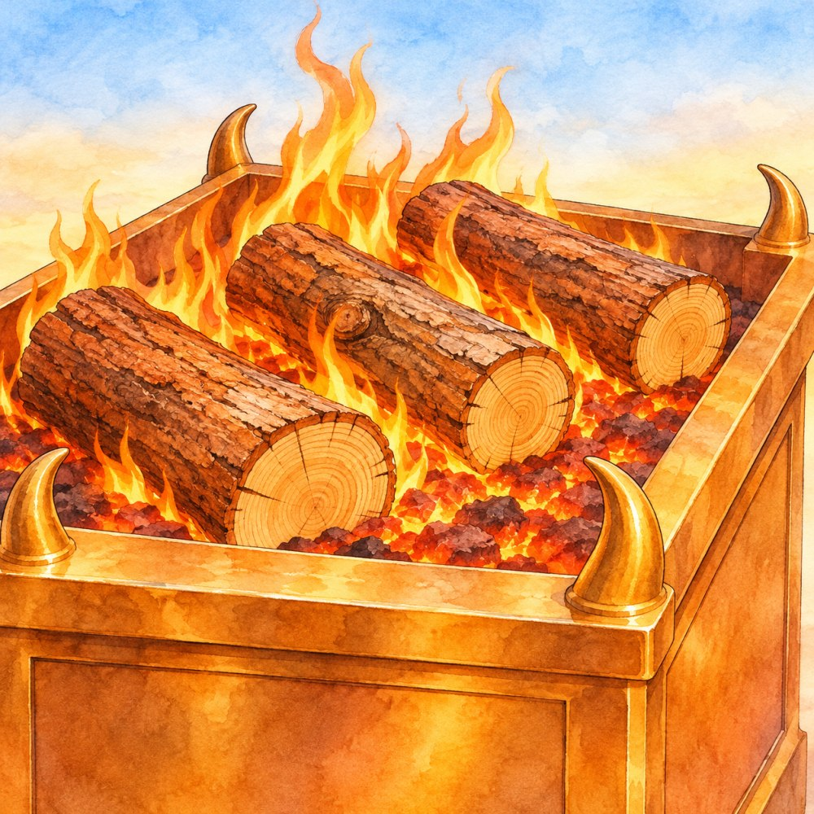

Leña
cada mañana
Levítico 6:12-13
Introducción
El fuego lo enciende Dios;
cuidarlo
nos toca a nosotros
Orar · Adorar · Predicar

Punto 1
Orar
Estar en comunión con Dios, todos los días
Aplicación
Un momento fijo,
primero
Pensamientos hechos oración
Martes: Reunión de Oración
La oración termina mostrándose en cómo
vivimos

Punto 2
Adorar
Entregarle a Dios la vida entera, cada día
Aplicación
Decisiones de
adoración
¿Qué corona guardamos?
Una decisión que nos cueste
Lo que Dios pone en el altar sale por la
boca

Punto 3
Predicar
La Palabra de Dios tiene poder propio
Aplicación
Predicar con
denuedo
Compartir lo que Dios nos habla
Un versículo + una invitación

Conclusión
La leña de
cada mañana
Orar · Adorar · Predicar
Cuidar el
fuego
Orar cada día
Entregar la corona
Abrir la boca